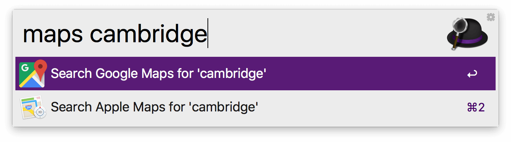
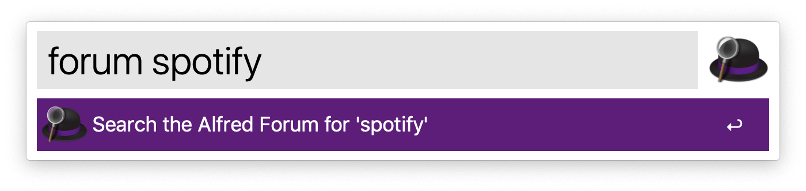
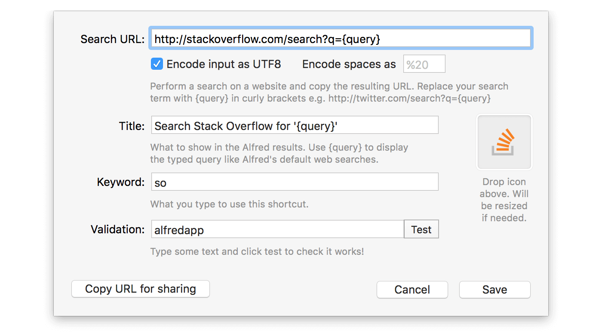
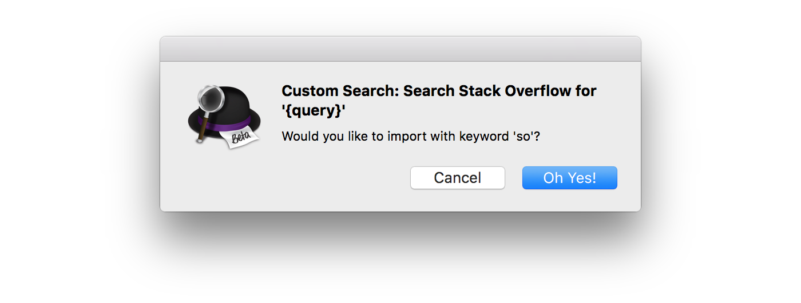

Create your own custom searches
Custom searches are a great way to customise Alfred by adding searches for sites you love to use.
First, use the web searches
Before jumping into Custom Searches, have a look at the dozens of web searches in the preferences. We’ve included a stack of standard searches you’re likely to want to use. Simply type the keyword followed by your search term.

Create your own custom web searches
There are no doubt websites you want to search that we haven’t included. In that case, it’s time to create your own custom searches!

Using OpenSearch and SearchAction
If you're lucky, the site you want to add a custom search for may support OpenSearch and SearchAction standards, in which case, type in the main URL for the website and click "Lookup" at the right end of your Search URL bar; Alfred will then discover the custom search format for you.
Adding a Custom Search URL manually
If the site doesn't support the standards above, adding a custom search manually is easy too.
The key to creating a custom web search is to work out the search URL for that site. In this example, we'll create a custom search for the online community Stack Overflow.
Simply do a search and replace the search term you used with {query} like so:
https://stackoverflow.com/search?q={query}
Fill in these details in Alfred's preferences under Features > Web Search and clicking on "Add Custom Search".

By default, the "Encode input as UTF8" checkbox is ticked, which helps ensure your custom searches accept international characters. Some websites encode spaces as %20 or a + symbol between the two words (e.g. magic+tricks). In that case, check the "Encode spaces" and add the + or relevant character in the box as well.
You may need to experiment a little, as every website is different, so some may require a slightly different URL format. Use the "Test" button to use the search term alfredapp and search your website until you've got it right.
If you can't work out the URL you need to use, pop by the Alfred forum where fellow Alfred users can help you work out your query.
More Custom Search Examples
Once you've familiarised yourself with custom searches, you'll be able to use them to create tons of useful searches, such as these:
- Search WallpapersWide for beautiful background images: http://wallpaperswide.com/search.html?q={query}
- Search Reddit.com: https://www.reddit.com/search?q={query}
- Search Apple Developer documentation: https://developer.apple.com/search/index.php?q={query}
- Track packages from your favourite shipping companies, e.g. https://www.packagetrackr.com/track/{query}
- Search Ruby on Rails API: http://apidock.com/rails/search?query={query}
Searching apps on your Mac
There’s more than one flavour of custom searches; you can also create them for applications on your Mac. Here are a few of our favourite ones:
- Spotify: spotify:search:{query}
- App Store: itunes://ax.search.itunes.apple.com/WebObjects/MZSearch.woa/wa/search?term={query}
- Facetime: facetime://{query}
Not all apps offer an application URI so it’s worth digging around or contacting the developer of the app.
A custom search without a query
Did you know that your custom “searches” can in fact not be searches at all? Launch any website with a custom keyword by saving it in Alfred’s custom searches.
- Launch Instagram: https://www.instagram.com
- And read the web comic XKCD with a “xkcd” custom search: https://xkcd.com
Share your searches
Want to swap custom searches with friends? Use the "Copy URL for sharing" button to copy the custom search and share it with other Alfred users. To import a custom search, click on any special URL starting with alfred:// and you'll see a pop-up asking you if you'd like to import the custom search.

Websites change and evolve, so searches that worked in the past may stop working. If this happens, take a look at the website you created the custom search for and go through the steps above again. It’s likely that the exact search URL has changed, so you’ll need to update your custom search accordingly.